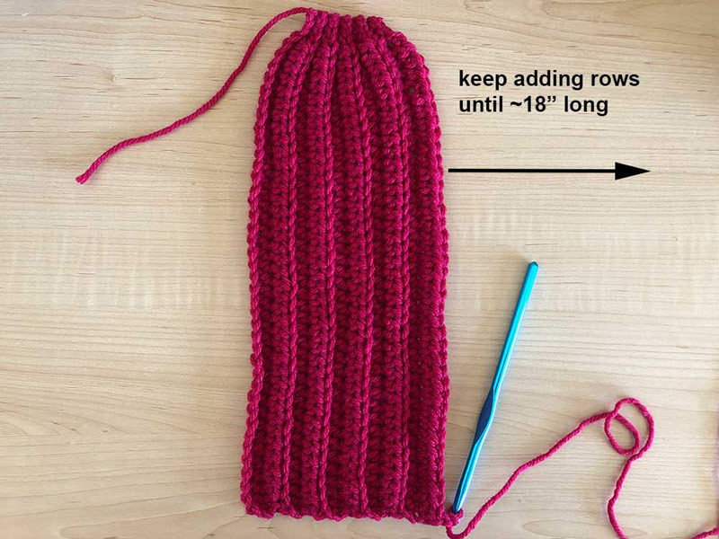
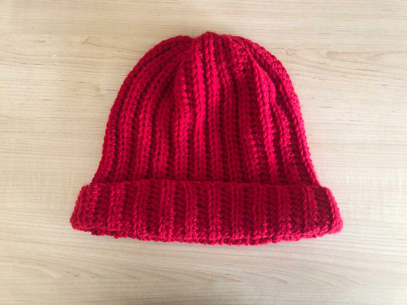
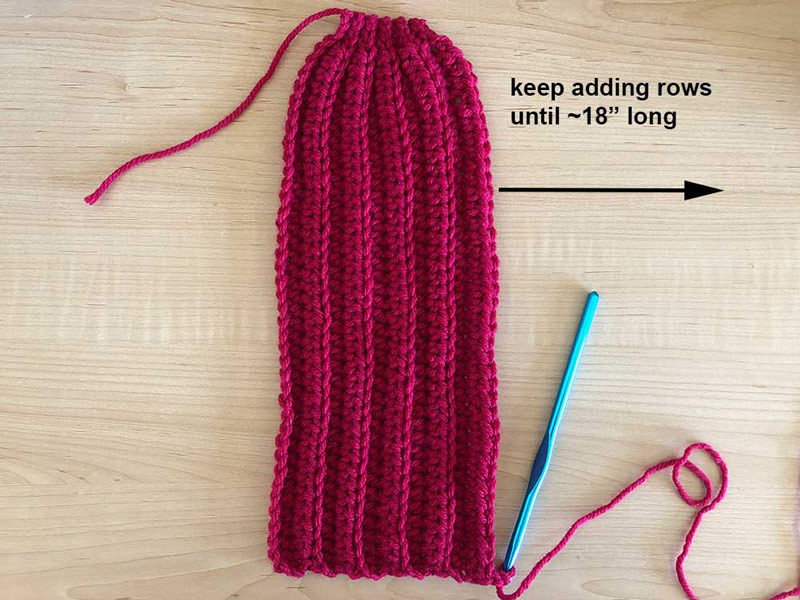
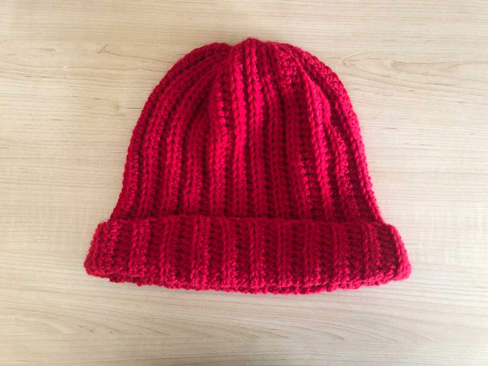

Materials:
- DK/worsted weight yarn
- Size I/5.5 mm crochet hook
- Scissors
I often use acrylic value yarn to make hats because it is affordable and accessible. I recommend the Red Heart Super Saver Yarn and can usually make two hats out of one 7 oz ball. You can also use any other medium weight yarn in natural fibers or blends. Thrift stores are also a great place to purchase yarn sustainably and I have found assorted bags of yarn perfect for multiple projects for under $5.
I recommend this set of 8 metal crochet hooks because they come in a range of sizes that is great for a variety of projects and yarn types.
Necessary skills: half-double crochet, chain and slip stitch
- Chain 45 stitches.
- This number can be adjusted depending on head size and desired fit. I prefer the hat to be longer so it can be cuffed once or twice. Reducing or increasing the chain length will change the height of the hat.
- Place the first HDC stitch in the third chain from the hook and continue all the way down the chain, stopping before the last three chain stitches. Slip stitch into the last three chains. Chain one and turn.
- We slip stitch the last three stitches on the top end of the hat to give it a tapered shape.
- Slip stitch into the back loop only of the next three stitches. HDC into the back loops all the way down the row. HDC into both loops of the last stitch. Chain 2 and turn.
- Crocheting in the back loop only gives the hat a ribbed texture, but you could crochet into both loops to get a different look.
- HDC back loop only down the row, stopping before the last 3 stitches. Slip stitch the last 3 stitches back loop only. Chain 1 and turn the piece.
- Repeat steps 3 and 4 until you have a long rectangle with a tapered top, about 18 inches long.
- Wrap the piece around your head to determine if you need to add more rows or unravel some. The tension throughout the piece and properties of the yarn can impact how much stretch the hat will have, so make adjustments as needed.
- To form the hat into a tube, slip stitch the sides together, being sure to match up the stitches evenly. Pull the yarn from the top of the hat to tighten it and tie a knot and weave in any loose ends into the hat.


 


